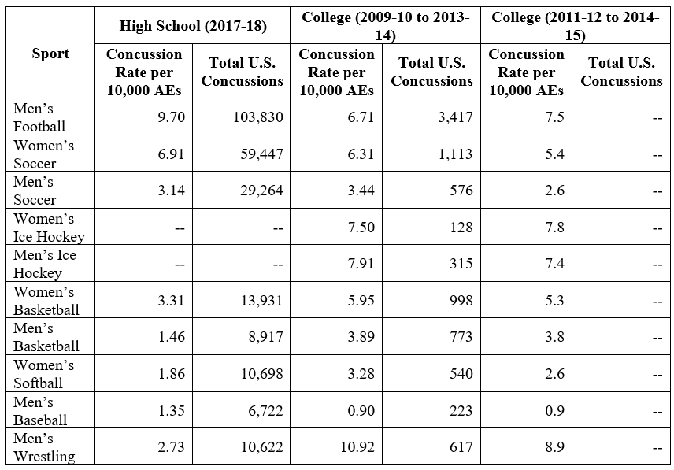

‘Why Attack Football? Girls’ Soccer Has More Concussions!’: A Study in Poor Reasoning and Stats
When I started in football injury epidemiology I focused on muscle, ligament, and bone issues. I shied away from brain injuries.
There were two reasons for this. First, I thought enough smart people were already working on brain injuries that my time was better spent elsewhere. Second, as a new entrant to the field I didn’t want to touch such a heated area. But since my article with Dr. Kathleen Bachynski estimating the prevalence of chronic traumatic encephalopathy (CTE) in NFL retirees appeared in Neurology last November I’m off the bench and into the game.
Seeing the backlash to those working to measure and quantify the short- and long-term impacts of brain trauma in football has been enlightening. Some of the points football’s “defenders” make have merit – we don’t know about the prevalence of CTE in high school or college players, for example, nor do we have a good handle on how many ex-players will show actual symptoms of CTE and other brain diseases rather than just the brain damage associated with them (although we do know that ex-NFL players die of neurodegenerative diseases such as Lou Gehrig’s disease at 3-4 times the rate of the general population).
Girls’ Soccer Has More Concussions, Why is No One Talking About Banning It?
First I’ll discuss the argument’s flawed logic and then its flawed statistics.
Logic
This is whataboutism at its finest. “Sure this thing is bad, but look at this other bad thing? What about that, huh? What do you have to say about that? Hypocrite.”
This is a weak, lazy, bad faith argument deployed strategically, often by powerful people, with the goal of stopping you from doing anything if you can’t fix everything. It is a common tool used, for example, by lobbyists and politicians to distract from their clients or donors who do bad things. It is also used, consciously or unconsciously, by others who use it to try and distract you from one problem by pointing out another. You have to be on the lookout for it constantly as it can seem very persuasive, especially to good people who just want to help.
It turns out that in public health and many other fields we can walk and chew gum at the same time. Regulating full-contact football for children does not mean we can’t also recognize and address the fact that concussions are an issue in other sports, too. If anything, doing the former should help the latter, not hinder it.
Imagine another more obviously absurd example from environmental health: “Why is everybody so focused on lead? What about arsenic? That’s poisonous, too.” The people making this argument are hoping that will lead you not to regulate either rather than both.
But maybe the people making the argument are really just invested in the brain health of girls’ soccer players. To that, I would ask them: do you support banning girls’ soccer for those younger than high school?
Statistics
Like all good lies, this one has a kernel of truth at its center that is then warped to the point of being unrecognizable.
The kernel: In sports played by both boys and girls, reported concussion rates are roughly 50-100% higher for girls. We’re not sure why – is it some sort of physical difference, or are girls just more culturally willing to report brain injuries? But it’s pretty clearly true. Football, however, is played (almost) exclusively by boys so this argument, even if true, is irrelevant.
Concussions also account for a larger percentage of injuries in girls’ soccer than in football (see, for example, the 2017-18 report on high school sports injuries here, which shows 24.5% of girls’ soccer injuries are concussions vs. only 22.5% of football injuries). That does not, however, mean that there are more concussions in girls’ soccer than football – more on that below.
The warping: The above points are twisted in some motivated people’s minds to become that concussion rates are higher in some girls’ sports than football, and thus they are the real public health issue.
The truth: Below is a table of the annual number of concussions as well as the rate per 10,000 athlete-exposures (1 athlete participating in a game or practice is 1 athlete-exposure) for various men’s and women’s sports. The data come from two large nationwide sources for youth and college sports: High School Reporting Information Online (2017-18 report) and the NCAA’s Injury Surveillance System (two separate analyses from the 2009-10 to 2013-14 seasons and 2011-12 to 2014-15 seasons). I included data from two NCAA reports because the newer report did not include nationwide estimated concussion counts.

In high school, football has by far highest concussion rate at 9.70 per 10,000 AEs; second is girls’ soccer at 6.91 per 10,000 AEs, nearly 30% lower. Because of the number of children who play each sport, football is also responsible for nearly twice as many concussions each year as girls’ soccer (103,830 vs. 59,447).
In college, football (6.71-7.50 per 10,000 AEs) is essentially tied for the second-highest concussion rate. Wrestling leads the way (8.90-10.92 per 10,000 AEs). Football’s rates are in line with or a bit below those for men’s (7.40-7.91 per 10,000 AEs) and women’s ice hockey (7.50-7.80 per 10,000 AEs).
However, because more students play football than wrestle, football is responsible for by far the most collegiate sport concussions each year (3,417). Women’s soccer comes in second and is responsible for less than a third of football’s concussions (1,113).
Summary:
Football is either at (high school) or near (college) the top when it comes to concussion rates. Because of the number of people who play it, football causes far more concussions than any other sport among both high school and college athletes.
Stop using bad stats about girls’ soccer to distract from the concussion problem in football.